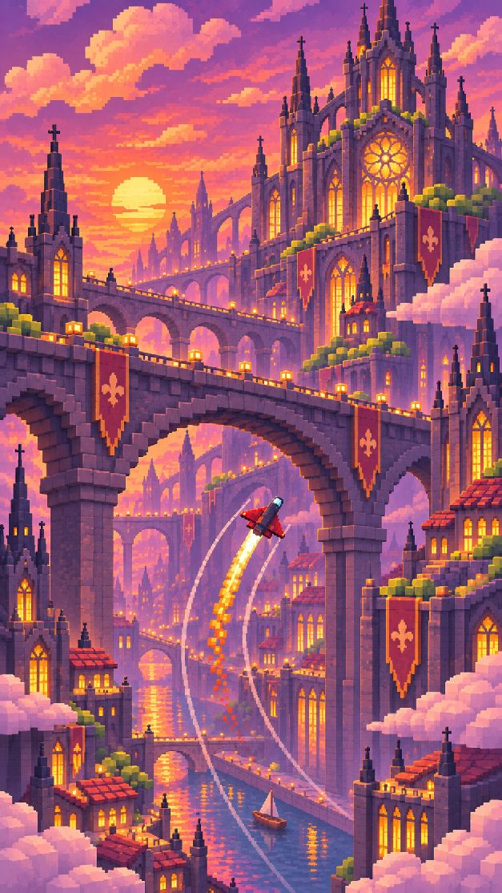

Четыре ракурса прямо в игре
Море → подлёт → город → пролёт под виадуками. Кадр — реальный рендер HTML-игры, а не имитация скриншота.
Слева ниже — эскиз владельца; рядом — реальные 3D-стопки ассетов.

Эскиз владельца 17.11.2026 — слева. Справа настоящие срезы из файлов PNG.